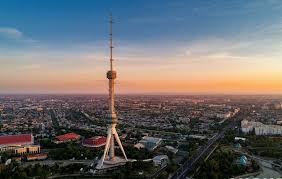

Toshkent |
|||||
| Toshkent |
Toshkent
|
||||
| O'zbekiston | |||||
| Buxoro | |||||
| Samarqand | |||||
| Farg'ona | |||||
| Jizzax | |||||
| Xorazm | |||||
| Namangan | |||||
| Qashqardaryo | |||||
| Sirdaryo | |||||
| Surxandaryo | |||||
| Andijon | |||||
Toshkent Vikipediya, ochiq ensiklopediya Navigatsiya qismiga oʻtishQidirish qismiga oʻtish Ushbu maqola shahar haqidadir. Mavzuning boshqa maʼnolari uchun Toshkent (maʼnolari) ga qarang. Toshkent Poytaxt Toshkent Panoramasi.jpg Tashkent skyline 2019.jpg Музей истории Тимуридов 5.jpg Humo Arena.jpg New Downtown of Tashkent city.jpg Tashkent City Park at night 2019.jpg {{{rasmiy_nomi}}}ning rasmiy gerbi Gerb 41°18′0″N 69°16′0″E G OKoordinatalari: 41°18′0″N 69°16′0″E G O Mamlakat Oʻzbekiston Ichki boʻlinishi 12 tuman Hukumat • Hokim Jahongir Ortiqxoʻjayev Ilk eslatilishi Eramizdan avvalgi 5–3 asr Avvalgi nomlari Yuni, Choch, Shosh (Madina-ash-Shash) va Binkat “Mustaqillik” ordeniOrder of Lenin ribbon bar.pngOrderredbannerlabor rib.png Maydon 334.8 km2 (129.3 mi²) Markazi balandligi 455 m Rasmiy til(lar)i oʻzbekcha Aholisi (2021)[1] 2 694 400 Zichligi 8000.5 kishi/km2 Milliy tarkib oʻzbeklar – 63,0% ruslar – 20,0% tatarlar – 4,5% koreyslar – 2,2% qozoqlar – 1,2% boshqalar – 7,0%[2] Konfessiyaviy tarkib Musulmonlar xristianlar va boshqalar Etnoxoronim toshkentlik(lar) Vaqt mintaqasi UTC+5 Telefon kodi +998 71 Pochta indeks(lar)i 100 000[3] Avtomobil kodi 01—09 Toshkent xaritadaToshkentToshkent Toshkent — Oʻzbekistonning poytaxti va eng yirik shahardir, shuningdek, aholisi boʻyicha Markaziy Osiyodagi eng yirik qadimiy shaharlardan biridir. Bu shahar Oʻzbekistonning shimoli-sharqiy qismida, Qozogʻiston bilan chegaraga yaqin qismda joylashgan boʻlib, maydoni 334,8 km2 (129.3 2) ni tashkil etadi. 2021-yilgi maʼlumotlarga koʻra, Toshkent aholisi 2 694 400 nafarni yoki Oʻzbekiston aholisining qariyb 8% ni tashkil etadi.[1] 2018-yilga koʻra, Toshkent shahrining YIM $2,74 milliardni tashkil etadi va bu koʻrsatkich Oʻzbekistondagi eng katta YIMga ega shahar boʻlib kelmoqda.[4][5] Milodiy VIII asr oʻrtalarida islomiy taʼsir boshlangunga qadar, Toshkentga sugʻd va turkiy madaniyat taʼsir koʻrsatgan. 1219-yilda Chingizxon Toshkentni vayron qilganidan soʻng, shahar qayta tiklandi va Buyuk Ipak yoʻlidan foyda koʻrdi. 1630-yildan 1729-yilgacha Toshkent shahri Qozoq xonligining rasmiy poytaxti bo'lgan. XVIII—XIX asrlardan boshlab ushbu shahar Qoʻqon xonligi tomonidan zabt etilgunga qadar, mustaqil shahar-davlatga aylangan edi. 1865-yilda Toshkent Rossiya imperiyasi tarkibiga kirdi hamda Turkiston general-gubernatorligi markazi boʻldi. Sovet davrida bu shahar butun Sovet Ittifoqining majburiy deportatsiyasi tufayli katta oʻsish va demografik oʻzgarishlarga guvoh boʻlgan. 1966-yilda boʻlgan Toshkent zilzilasi tufayli Toshkentning katta qismi vayron boʻlgan edi, biroq u namunali Sovet shahri oʻlaroq qayta qurilgan. Oʻsha paytda Toshkent Sovet Ittifoqining Moskva, Leningrad va Kiyev shaharlaridan keyin turadigan toʻrtinchi yirik shahar boʻlgan.[6] Hozirgi kunda, mustaqil Oʻzbekiston poytaxti sifatida, Toshkentda koʻp millatli aholi saqlanib qolgan, ular orasida etnik oʻzbeklar va qozoqlar koʻpchilikni tashkil qiladi. 2009-yilda Toshkentning 2 200 yilligi nishonlandi. Bu munosabat bilan shahar infra va transport tizimi yangilandi.[7][8] Mundarija 1 Etimologiyasi 2 Geografik joylashishi 3 Iqlimi 4 Ma'muriy bo'linishi 4.1 Uchtepa tumani 4.2 Bektemir tumani 4.3 Mirzo Ulugʻbek tumani 4.4 Mirobod tumani 4.5 Sergeli tumani 4.6 Olmazor tumani 4.7 Chilonzor tumani 4.8 Shayxontohur tumani 4.9 Yunusobod tumani 4.10 Yakkasaroy tumani 4.11 Yashnobod tumani 4.12 Shahar hokimligi 5 Aholisi 6 Tarixiy va arxitektura yodgorliklari 6.1 Madrasalar 7 Tarixi 8 Sovet davridagi Toshkent 8.1 Toshkentning Maʼdaniy maʼishiy inshoatlari 8.2 Zamonaviy inshoatlar 9 Mustaqillik davrida 10 Transport 11 Maorifi va madaniyati 12 Hamdoʻst shaharlar 13 Manbalar 14 Adabiyotlar 15 Havolalar Etimologiyasi Toshkent 2200-yildan ortiq tarixga ega.[9] Bu davr ichida u mudofaa devori bilan oʻralgan qalʼadan jahondagi yirik shaharlardan biri, Oʻzbekiston Respublikasining poytaxtigacha boʻlgan yoʻlni bosib oʻtdi. Asrlar davomida shahar oʻzining tinch hayotidagi muhim voqealarni va suronli jangu jadallarni, yuksalish va inqiroz davrlarini boshidan kechirdi. Necha bor shahar vayron boʻlib, qayta qad koʻtardi. Toshkent oʻrnidan necha bor siljib, nomi xam bir necha marta oʻzgardi. Xoja Ahror Valiy, Shayx Umar Bogʻistoniy, Abu Bakr Shoshiy, Abu Sulaymon Banokatiy, Hofiz Koʻhakiy kabi buyuk allomalar shu hududda yashab, ijod etganlar. Shahar sifatida Toshkent haqidagi birinchi maʼlumotlar eramizdan avvalgi II asrdagi qadimgi-sharqiy manbalarda uchraydi; Xitoy manbalarida Yuni deb atalgan; Fors shohi Shоpur I eramizdan avvalgi 262-yildagi „Zardusht Kaʼbasi“ qaydnomalarida Toshkent vohasi Choch deb nomlangan. Choch — oltin eksporti, qimmatbaho toshlar, shirinliklar va aslzot otlarni boshqa shahar va mamlakatlarga olib oʻtishdagi yoʻlning chorrahasida joylashgan. „Tosh shahar“ maʼnosini anglatuvchi bugungi Toshkent — zamonaviy respublikaning poytaxti, oʻtmish maʼlumotlarini saqlovchi, Oʻzbekiston tarixi haqida koʻp maʼlumotlarni xotirlovchi, 2 milliondan ortiq aholisi boʻlgan bu shahar Markaziy Osiyoning eng katta industrial markazlaridan biridir.[manba kerak]
Toshkentning uzoq oʻtmishi va u qad koʻtargan qadimgi Choch yoki Shosh viloyati haqidagi maʼlumotlar yozma manbalarda xilma-xil hamda uzuq-yuluq tarzda aks etgan. Zardushtiylarning qadimgi muqaddas kitobi Avesmona Sirdaryo havzasidagi mamlakat „Turon“, aholisi esa „tur“lar deb yuritilgan. Bu oʻlkada tur qavmlari urugʻ va qabila oqsoqollarining diniy va siyosiy qarorgohi — Qangʻxa (Qangʻa) shahri borligi tilga olinadi. Toshkent haqidagi dastlabki aniqroq maʼlumotlar miloddan avvalgi 2-asr — milodiy 5-asrlarga mansub Xitoy manbalarida uchraydi. Ularda Toshkent viloyati qadimda Loyuyeni, Yuni, soʻngra Chjeshe, Chjechji, Chjesi va Shi deb nomlangan. Bu atamalar (avvalgi ikkitasidan tashqari) „Choch“ soʻzining xitoycha talaffuz etilishi natijasida hosil boʻlib, hatto oxirgi „Shi“ toponimi xitoychada „tosh“ maʼnosini anglatgan. Miloddan avvalgi 3-asrda qadimgi Choch viloyatida tashkil topib, milodning 3-asrlarigacha hukm surgan „Qangʻ“ („Qangʻa“ yoki „Qangʻxa“) davlati Xitoy yozma manbalarida „Kangkiya“ („Kanizyuy“) nomlari bilan tilga olinadi. Qadimgi toxarlar tilida „qangʻ“ soʻzi ham „tosh“ maʼnosini anglatgan. Bu davlatning poytaxti — Bityan shahri boʻlib, u Iosha-Xasart daryosi (Sirdaryo) boʻyida joylashgan. Bityan shahri Davan (Fargʻona vodiysi)dan 1510 li (528 km) masofada boʻlgan. Bityan shahrining bizgacha saqlanib qolgan xarobalari mahalliy aholi oʻrtasida „Qanqatepa“ nomi bilan mashhur. U Toshkentdan 70 km janubda — Sirdaryoga yaqin yerda, Ohangaron daryosining qurib qolgan qadimgi oʻzani boʻyida joylashgan. Arxeologik maʼlumotlardan maʼlum boʻlishicha, Qanqatepa miloddan avvalgi 3-asrdayoq atrofi mudofaa devori bilan oʻralgan hamda arkli katta shahar boʻlib, maydoni 160 gektarga teng boʻlgan. Qadimgi Qangʻ davlatining fuqarolari ham „qangʻar“, „qanzar“, keyinchalik „qanhi“, „qangʻli“ yoki „qaʼni“ deb nomlangan. Ular (qanqalar) hindlarning qadimgi kitobi „Mahabharata“da saklar va toxarlar nomlari qatorida tilga olingan. Yozma manbalarda keltirilishicha, Toshkentning qadimgi nomi „Choch“ boʻlgan. Toshkent arablar tasarrufiga oʻtgach, arab alifbosida „ch“ harfining yoʻqligi bois arabiy asarlarda „Shosh“ deb yuritilgan. Ilk oʻrta asrlarda u „Choch“, „Shosh“, „Shoshkent“, „Madinat ash Shosh“, „Binkat“ va „Tarkan“ deb nomlangan. Toshkent haqidagi dastlabki maʼlumotlar mahalliy olimlar (Xorazmiy) va tarixchi geograflardan Tabariy, Istahriy asarlarida uchraydi. Istahriyning „Kitob al masolik val mamolik“ („Yoʻllar va mamlakatlar toʻgʻrisidagi kitob“)ida Shoshning bosh shahri Binkat deb koʻrsatiladi. 10-asrda yozilgan (muallifi nomaʼlum) „Hudud ul Olam“ („Olamning chegaralari“) kitobida „Choch bu katta viloyat, xalqi jangovar va sahiydir. U yerda kamon va oʻqyoy yasaladi. Binkat Chochning poytaxti hisoblanadi. Bu katta shahar, ayni vaqtda podshoning qarorgohidir“, deb taʼriflanadi. Firdavsiyning „Shohnoma“ asarida Choch oʻzining kamoni Shoshiy (oʻqyoylari) bilan mashhurligi haqida misralar bor. Shahar „Toshkent“ nomi bilan dastavval 11-asrning mashhur allomalari — Abu Rayhon Beruniy va Mahmud Qoshgʻariyning asarlarida tilga olinadi. Beruniy „Hindiston“ asarida Toshkent nomining kelib chiqishi toʻgʻrisida soʻz yuritib, „Tosh“ soʻzi asli turkcha boʻlib, Shosh koʻrinishini olgan. „Toshkand — toshli qishloq demakdir“, deb izohlaydi. Mahmud Qoshgʻariyning maʼlumoti boʻyicha, Toshkent 11-12-asrlarda „Tarkan“ deb ham yuritilgan. Zahiriddin Muhammad Bobur „Boburnoma“da Toshkent nomi ustida toʻxtalib, asarlarda Toshkent nomini Shosh, baʼzan Choch yozadilar" deb qayd etadi. Biroq 16-asr oxiri va 17-asr boshlarida Toshkent toponimi shuhrat topib, uning qadimgi Choch, Shosh va Binkat nomlari asta-sekin muomaladan tushib qoldi. 17-asrda yashagan tarixchi olim Mahmud ibn Vali shunday yozadi: „Shosh — Sayxun (Sirdaryo)ning u tomoniga joylashgan shahar va Turkiston (viloyat)ga qaraydi… Uni Choch ataydilar. Biroq hozirgi vaqtda u Toshkent nomi bilan mashhurdir“. Toshkent vohasida shahar madaniyatining shaqllanib, shaharning qad koʻtarishi shu oʻlkada yashagan qadimgi chorvador va dehqonlarning ijtimoiy-iqtisodiy va madaniy hayotidagi ulkan tarixiy jarayon boʻlib, bu jarayon shubhasiz oʻlkaning oʻzlashtirilib, obod etilishi, ayniqsa, unda chorvachilik va dehqonchilik xoʻjaliklarining tashkil topishi hamda hunarmandchilik, ichki va tashqi savdoning rivojlanish tarixi bilan uzviy bogʻliqdir. Bu jarayonning tarixiy manzarasi nihoyatda keng boʻlib, u yozma manbalarga nisbatan koʻproq arxeologik tadqiqotlar vositasi bilan tiklanmoqda. Shuning uchun ham Toshkent hududida olib borilgan arxeologik tadqiqotlarning natijalari qadimgi va oʻrta asrlarga oid manbalardagi maʼlumotlarni toʻldirib, ularga aniqlik kiritmoqda. 1867-yilda Toshkent Turkiston general-gubernatorligining markaziga aylandi. 1930-yildan 1991-yilgacha Toshkent Oʻzbekiston SSR poytaxti boʻlgan. Geografik joylashishi Toshkent vohasi Tyan-Shanning gʻarbiy yonbagʻirlaridan boshlanib Sirdaryo etaklariga tushadigan keng togʻoldi tekisligining bir qismida joylashgan. Sharqda u uchta — Ugom, Piskom va Chatqol togʻ tizmalari bilan oʻralgan boʻlib, bu tizmalarni shu nomlar bilan ataluvchi daryolar oqib oʻtuvchi daralar ajratib turadi. Bu daryolar qoʻshilib Chirchiq daryosini hosil kiladi. Chirchiq daryosi Chorvoq havzasining tor darasidan oʻtib, Gʻazalkentdan quyiroqqa tushganda kengligi baʼzi joylarda 20 kmdan oshadigan qadimiy tekislik boʻylab oqadi. Gʻarbda Chirchiq vodiysiga Qizilqumning qaynoq nafasi uriladi. Bu qayirning bir qismini Chirchiq daryosining hozirgi oʻzani egallagan. Janubiy qismida esa vodiyga kirib boruvchi Ohangaron daryosi yastangan. Ushbu tekislik shimolida joylashgan Aris daryosining vodiysi bilan birga bu tabiiy suv tarmoqlari Oʻrta Osiyo dehqonchilik vohalarining chekka mintaqasini tashkil etadi. Undan shimol tomonga qarab esa, yaylovlarga boy boʻlgan poyonsiz choʻl yastanib yotadi. Chirchiq daryosi havzasi Oʻrta Osiyoning qadimiy dehqonchilik va shahar madaniyatlari beshiklaridan biridir. Uning hududida Toshkentning markazi paydo boʻlgan. Joydan joyga koʻchib turgan bu markaz qadimda va oʻrta asrlarda Choch yoki Shosh, keyin esa Toshkent nomi bilan mashhur boʻlgan. Toshkent vohasida barcha tarixiy davrlarda suv moʻl-koʻl boʻlgan. Tarixan tarkib topgan kanallar tarmogʻi shaharni suv bilan taʼminlab turgan. Shu bois shahar xech qachon suv taqchilligini sezmagan. Buni oʻrta asrlardan to XIX asrgacha Toshkent toʻgʻrisida yozgan mualliflar xamisha taʼkidlab kelganlar. Bu yerdagi iqlim hozirgi odamlarning ajdodlari paydo boʻlgan, yaʼni bir necha oʻn ming yil muqaddam mavjud boʻlgan iqlimdan farq qilgan. Issiq quruq yoz bilan yillik yogʻin miqdorining asosiy qismi yogʻadigan qahraton qish almashinib turgan. Toshkentning togʻ yonbagʻirlari va tekisliklar oʻsimliklarga boy boʻlib, ibtidoiy odamlar ovlaydigan yovvoyi hayvonlar juda koʻp boʻlgan. Ularning aksariyati, jumladan, arxar, jayron, qulon va asl bugʻu kabi hayvonlar yaqin vaqtda yoʻqolib bitgan boʻlsa, junli karkidon, gʻor ayigʻi, arslon singari hayvonlar esa ancha ilgari yoʻqolib ketgan. Ular haqida ibtidoiy odamlar manzillarini qazib oʻrganish chogʻida topilgan qoldiqlar orqali maʼlumot olish mumkin. Bu yerlarda bir necha yuz ming yil avval ovchilik va termachilik bilan kun kechiruvchi ibtidoiy jamoalar gʻorlar va togʻ bagʻri bostirmalarini, yoki daryo sohillari va chashmalar yonidagi ochiq manzillarni egallab makon qilganlar. Bunday joylar hozirgi Toshkent shahri hududida ham mavjud boʻlgan. Jumladan, Boʻz suv yoqasidagi Qoʻshilish manzilgohidan birmuncha nozik ishlangan chaqmoqtoshlar, pichoqlar, bigizlar, ibtidoiy ustalar tomonidan bundan toʻqqiz ming yil avval yasalgan ov va mehnat qurollari topildi. Topilmalar orasidan yovvoyi buqa tur suaklarining uchrashi, mutaxassislar fikricha, ularning oʻsha vaqtlardayoq xonakilashtirilgan deb taxmin qilishga asos boʻldi. Hayvonlarni xonakilashtirish jarayoni Toshkent vohasi hududida ham kechgan. Miloddan oldingi uchinchi ming yillikdan boshlab, bu hudud dastlabki chorvadorlar tomonidan oʻzlashtira boshlashgan. Ular ish asboblari va jezdan qurollar tayyorlashni oʻrganganlar. Arxeologlar Toshkent shahri hududi va uning atrofida chorvadorning koʻpdan koʻp qabrlari hamda qoʻrgʻonli dahmalarini topganlar. Bu joylarda dafn etilganlarning yoniga jezdan yasalgan ish asboblari, qurollar, zeb-ziynatlar va qoʻlda yasalgan idishlar ham qoʻyilgan. Toshkent shahri hududida bunday qabristonlar hozirgi shampan vinosi zavodi yaqinidan, shuningdek, Qoraqamish arigʻi boʻyidan topilgan. Sirgʻalida esa dasht chorvadorlari va yilqichilarining manzili boʻlganligi aniqlangan. Bu yerdan ish qurollaridan tashqari burama halqali jez bilaguzuklar ham topilgan.[10] Iqlimi Toshkent Klimatogramma Toshkent Y F M A M I I A S O N D 54.5 5.8−3.1 46.8 7.9−1.5 72.3 14.34.2 63.6 21.89.9 32 27.413.7 7.1 33.217.7 3.5 35.719.4 2 34.017.2 4.5 28.712.4 34.1 21.07.3 45 14.23.3 53.4 8.5−.3 Harorat °C • Yog’in miqdori mm Shaharning iqlimi kontinental, jazirama, quruq yoz kunlari hamda sovuq qish iqlimi bilan Shahar boshqa dunyo shaharlaridan ajralib turadi. Yillik oʻrtacha harorat 13,5 °C. Yozda esa harorat 35 °C gacha yetish bilan birga, qish oylarida buning aksini kuzatish mumkin. Havo harorati −25… −30 C° gacha boradi. Asosiy yogʻinlar noyabr hamda mart oylarida kuzatiladi. Toshkent iqlimi kontinental, yillik oʻrtacha temperaturada 13,3°, yanvarning oʻrtacha temperaturasi — 1,1°, eng past temperatura — 29°. Iyulning oʻrtacha temperaturasi 27,5°, eng yuqori temperatura 42°. Yiliga 360–390 mm yogʻin yogʻadi. Chirchiq daryosidan chikarilgan va butun shahar boʻylab oʻtadigan Boʻzsuv, Salor, Anhor, Qorasuv, Oqqoʻrgʻon, Boʻrijar, Oktepa, Qoraqamish va boshqa kanallar uning mikroiklimiga ijobiy taʼsir koʻrsatadi. Ma'muriy bo'linishi Shahar 12 ta tumandan iborat: Tashkent city districts (2018) coloured.png BektemirChilonzorYashnobodMirobodMirzo UlugʻbekSergeliShayxontohurOlmazorUchtepaYakkasaroyYunusobodQ o z o gʻ i s t o nT o sh k e n t v i l o y a t i
Uchtepa tumani Uchtepa tumani (sobiq Akmal Ikromov) tumani — Toshkentdagi maʼmuriy-hududiy birlik. 1977-yilda Chilonzor va Oktabr (hozirgi Shayxontohur) tumanlarini ixchamlashtirish maqsadida, ular hududida tashkil etilgan. Davlat arbobi Akmal Ikromov nomiga qoʻyilgan. 1977-yildan hozirgi chegarasida janubiy va janubiy sharqdan Zargarlik va Qatortol koʻchalari bilan boshlanib, gʻarb va shimoliy gʻarbda avtomobil halqa yoʻliga tutashadi. Maydoni 2797 ga, jumladan, koʻkalamzor yerlari — 1124 ga. Aholisi 228,3 ming kishi (2004). Koʻchalar soni 424 tani tashkil etib, shundan 8 tasi markaziy hisoblanadi. Asosiy avtomagistrallari: Lutfiy, Hamroqul Tursunqulov, Farhod, Sulton Segizboyev, Uygʻur, Nazarbek, Beshqayragʻoch, Toʻqimachi koʻchalari va Kichik halqa yoʻli. Tumanda 50 ta mahalla mavjud. Tuman hududida quyidagi sanoat korxonalari: zargarlik zavodi, bulkakonditer, sut kombinatlari, „Toshkentsut“ aksiyadorlik jamiyati, „Fonon“ zavodi, „OsiyoFud“ non mahsulotlari korxonasi, „Chevar“ tikuvchilik ishlab chiqarish. birlashmasi, „Gazavtomatika“ korxonasi, „Toshinterm“ Oʻzbekiston — Xitoy, „Shayxontohurtekstil“ qoʻshma korxonalari, Toshkent mexanizatsiya vositalari va jihozlari hamda stanoksozlik tajriba eksperimental mexanika zavodi, toʻqimachilik kombinatining 4-yigiruv toʻquv fabrikasi, 13 avtotransport va 5 qurilish tashkiloti mavjud. Tumanda Jahon tillari universiteti, Davlat soliq akademiyasi, yuridik kolleji, sanʼat internat maktabi, 3 ta akademik litsey, 5 kasb-hunar kolleji, 37 umumiy taʼlim maktabi, 53 bolalar bogʻchasi va yaslisi, 8 davolash yaslisi, 6 davolash profilaktika muassasasi, 22 poliklinika, 6 oilaviy poliklinika, 5 kasalxona va dispanser bor. Tuman aholisiga 512 oziq-ovqat va 550 sanoat mollari doʻkoni, 420 maishiy xizmat koʻrsatish shoxobchasi xizmat qiladi. 2 madaniyat uyi, 8 jamoat kutubxonasi, „Vatan“ kinoteatri, Akmal Ikromov nomidagi madaniyat va istirohat bogʻi bor. Turar joy fondining umumiy foydali maydoni 3486 ming m² (2004). Tumanda qurilish ishlari 1966-yildan boshlangan. Toshkentni rekonstruksiya qilish va rivojlantirish Bosh planiga muvofiq tumanda katta qurilish ishlari olib borilmoqda; 270, 272 ATS, stomatologiya poliklinikasi, maishiy xizmat koʻrsatish shoxobchalari, „Karvonsaroy bozori“, „Oʻrikzor“, „Guliston“ turar joy massivlari, bolalar bogʻchalari, maktablar qurilib ishga tushirildi. Farhod va Uygʻur koʻchalari kengaytirildi. Toshkentning balanddan koʻrinishi Bektemir tumani Bektemir tumani (1990-yilgacha Narimonov) — Toshkentdagi maʼmuriy-hududiy birlik. 1960-81 yillar Bektemir shaharchasi: 1973-90 yillarda shahar, 1981-90 yillarda davlat va jamoat arbobi, yozuvchi Narimon Kerbalay Najaf oʻgli Narimonov (1870-1925) nomi bilan yuritilgan. 1990-yildan Toshkent tarkibidagi Bektemir tumani. Chirchiq daryosining chap sohilida. Bu daryo Bektemir tumanini boshqa tumanlardan ajratib turadi. Maydoni 1,83 ming ga, shu jumladan koʻkalamzorlashtirilgan hududi 0,012 ming ga. Aholisi 29,9 ming kishi (2004). Koʻchalar soni 45 ta. Asosiy yirik koʻchalari: Husayn Boyqaro, Ohangaron shohkoʻchasi, Bektemir. 12 ta mahalla mavjud. Tuman hududida „Oʻzsmatana“, „Agrokeramika“, „Mirmaks“ qoʻshma korxonalari, 17 sanoat korxonasi, shu jumladan, Toshkent motor, „Irgidromash“ va boshqalar, 9 transport muassasasi, „SredazVNIIgidromash“ ilmiy tadqiqot instituta, 5 umumiy taʼlim maktabi, musiqa maktabi, bolalar sport maktabi, 13 bolalar bogʻchasi, 16 tibbiyot davolash muassasasi, 4 poliklinika bor. Tumanda 522 yirik hamda kichik oʻrta biznes subʼyektlari faoliyat koʻrsatadi, shundan 44 tasi xorijiy investitsiyalar ishtirokida tuzilgan korxonalardir. Tuman aholisiga 11 oziq-ovqat, 4 sanoat mollari, 7 aralash mollar doʻkonlari, univermag, 30 ovqatlanish korxonasi, maishiy xizmat koʻrsatish shoxobchalari xizmat qiladi. 5 jamoat kutubxonasi, klub, madaniyat uyi, kinoteatr, 10 dan ziyod bolalar sport maydonchalari, tennis korti, 2 futbol maydoni bor. Tumanda Oʻrta Osiyoda yagona boʻlgan „Golfklub“ tashkil etilgan. Mirzo Ulugʻbek tumani Mirzo Ulugʻbek tumani (1935-yilgacha — Proletar tumani, 1992-yilgacha Kuybishev tumani; 1992-yil maydan Mirzo Ulugʻbek tumani) — Toshkentdagi maʼmuriy-hududiy birlik. 1929 i. tashkil qilingan. Hozirgi chegarasi 1978-yildan buyen oʻzgarmagan. Toshkentning shimoli-sharqiy qismida joylashgan. Toshkent markazi (Amir Temur xiyoboni)dan boshlanib, shimoli-sharqiy tomonga, Toshkent avtomobil halqa yoʻligacha boradi. Feruza mavzesi, Toshkent traktor zavodi, Ulugʻbek shaharchasi gʻam tuman hududiga kiradi. Maydoni 3,2 ming km², shu jumladan, koʻkalamzorlashtirilgan hudud — 0,579 ming ga. Aholisi 247,6 ming kishi (2004). Tuman hududida tarixiy va madaniy yodgorliklardan Kirxa (1892) saklangan. Koʻchalar soni 532 ta. Asosiy magistrallari: Pushkin, Parkent, Temur Malik, Oqqoʻrgʻon koʻchalari, Buyuk ipak yoʻli shohkoʻchasi, Habib Abdullayev koʻchasi, Kichik halqa yoʻl. 49 ta mahalla mavjud. Tuman hududida 377 yirik korxona, shundan 28 sanoat korxonasi (shu jumladan, „Toshkentkabel“, traktor zavodlari, „Oʻzbekiston paxtachilik mashinasozligi“, lokboʻyoq zavodlari.), 3119 kichik va oʻrta biznes subʼyektlari bor. 27 ilmiy tadqiqot instituta, 10 loyiha instituti, 4 oliy oʻquv yurti (Madaniyat instituti, Jahon iktisodiyoti va diplomatiya universiteti va boshqalar) xamda umumqoʻshin qoʻmondonlik bilim yurti, harbiy akademiya, Ichki ishlar vazirligi akademiyasi, Toshkent vrachlar malakasini oshirish instituti, yozuvchilar, kompozitorlar, meʼmorlar ijodiy uyushmalari va teatr jamiyati, 33 umumiy taʼlim maktabi, 12 kasbxunar kolleji, 4 bolalar musiqa maktabi va sanʼat maktabi, 10 kasalxona va dispanser, „Ona va bola“ markazi, 11 oilaviy poliklinika, 2 tibbiysanitariya qismi ishlab turibdi. Toshkent koʻchalari Aholiga 176 oziq-ovqat doʻkoni, 244 sanoat mollari doʻkoni, 304 umumiy ovqatlanishkorxonalari, 517 maishiy xizmat koʻrsatish shoxobchasi xizmat qilmoqda. Muxtor Ashrafiy, Sergey Yesenin uymuzeylari, 28 jamoat kutubxonasi, 3 madaniyat uyi va saroyi, 3 madaniyat va istirohat bogʻi, hayvonot bogʻi va boshqa ishlab turibdi. Turar joy fondining umumiy foydalanish maydoni 2579 ming m2. Mirobod tumani Mirobod tumani (1992-yilgacha Lenin tumani) — Toshkentdagi maʼmuriy-hududiy birlik. 1929-yil Shayxontohur tumani bilan birgalikda tashkil etilgan. Hozirgi chegarasi 1977-yildan buyon oʻzgarmagan. Tuman Toshkentning janubiy qismida joylashgan. Shimolida Amir Temur xiyobonidan halqa yoʻligacha choʻzilgan. Maydoni 1,71 ming ga, shu jumladan koʻkalamzorlashtirilgan hududi −0,356 ming ga. Aholisi 123,8 ming kishi (2004). Koʻchalar soni 103 ta, shundan 8 tasi markaziy koʻcha hisoblanadi. Bularga Fitrat, Movarounnahr, Nukus, Kosmonavtlar koʻchasi, Taras Shevchenko, Fargʻona yoʻli va boshqa kiradi. 39 ta mahalla mavjud. Toshkent janubdan Bektemir, sharqdan Hamza, shimoldan Yunusobod, shimoli-gʻarbdan Yakkasaroy, janubi-gʻarbdan Sergeli tumanlari bilan chegaradosh. Tuman chegaralari Sharof Rashidov, Istiqlol, Oxunboboyev, Fargʻona yoʻli, Toshkent Katta halqa yoʻli, Beshkent, Fitrat, Turgʻunboyeva,. Oq yoʻl, Kichik Beshyogʻoch, Nukus, Kunayev koʻchalaridan oʻtadi. Toshkent metropolitenining „Oybek“, „Toshkent“ stansiyalari Mirobod tumani hududidadir. Tuman hududidan 4 ta kanal (Baratxoʻja, Qorasuv, Salor, Tolariq) oqib oʻtadi. Mirobod tumanida 3167 korxona va tashkilot faoliyat koʻrsatadi, shundan 349 tasi yirik, 818 tasi kichik va oʻrta biznes subʼyektlaridir. Toshkent shahri boʻyicha sanoat ishlab chiqarish. umumiy hajmidagi tumanning ulushi 10,5 % ni tashkil etadi. „Oʻzelektroapparat“, „Oʻzkimyofarm“, „Foton“, „Tong“ aksiyadorlik jamiyatlari, „Oʻztemiryoʻlmashtaʼmir“, „Uchqun“ kabi yirik sanoat korxonalari respublika ahamiyatiga ega. Mirobod tumanida asosiy doiradagi sanoat korxonalari soni 31 tani tashkil qilib, sanoatning 8 ta tarmogʻi boʻyicha faoliyat yuritadilar, bular yengil sanoat, oziqovqat, tibbiyot, matbaa sanoati, mashinasozlik va metallni qayta ishlash sohasi, yogʻochni qayta ishlash va qogʻoz ishlab chiqarish. sanoati, kimyo va neft kimyosi sanoati, qurilish ashyolari ishlab chiqarish. tarmoqdaridan iborat. Xalq isteʼmoli mollari ishlab chiqarish. hajmlarining eng yuqori oʻsish surʼatlari yengil, oziq-ovqat sanoat sohalarida kuzatiladi. Tuman eksport salohiyatining asosiy qismi „Oʻzbekiston havo yoʻllari“ va „Oʻzbekiston temir yoʻllari“ kompaniyalariga toʻgʻri kelib, Toshkent shahri boʻyicha eksportning 1/3 qismi tuman ulushiga toʻgʻri keladi. Tumandagi oʻzida chiqarilgan mahsulot eksporti bilan shugʻullanuvchi korxonalar „Oʻzelektroapparat“, „Foton“ aksiyadorlik jamiyatlari, „Kvark“, „Oʻztemiryoʻlmashtaʼmir“, „Toshelektroapparat“ korxonalari va boshqadir. Mirobod tumanida Mirobod bozori, aeroport, temir yoʻl vokzali, 17 umumiy taʼlim, 2 musiqa, 3 sport maktabi, 8 kasb hunar kolleji, 3 akademik litsey, 6 oliy oʻquv yurti (Toshkent Vestminster universiteti, Toshkent davlat aviatsiya, Toshkent farmatsevtika, Toshkent temir yoʻllari transporti muhandislari, Toshkent sharqshunoslik, Toshkent avtomobil va yoʻllar institutlari), 5 oʻrta maxsus bilim yurti faoliyat koʻrsatadi. Aholiga 778 savdo va 180 maishiy xizmat koʻrsatish shoxobchasi xizmat koʻrsatadi. Ulardan 108 oziq-ovqat, 55 sanoat mollari doʻkonlari, 227 ovqatlanish, 160 nooziq, 160 aralash, 58 nostatsionar savdo shoxobchalaridir. Toshkent shahar, viloyat hokimiyatlari, Alisher Navoiy nomidagi oʻzbek davlat akademik opera va balet katta teatri, Toshkent davlat rus akademik drama teatri, shuningdek, 4 madaniyat uyi, 2 madaniyat va istirohat bogʻi, Le Meridian otel Tashkent Palace, „Poytaxt“ mehmonxonalari, 7 kutubxona, Sanʼat, Temir yoʻl texnikasi, Tibbiyot muzeylari, Oʻzbekiston Badiiy akadimyasi Markaziy koʻrgazma zali mavjud. Tumanda 1 klinik shifoxona, bolalar kasalxonasi, shahar klinik ruxiy kasalliklar shifoxonasi, 2 tugʻruq majmuasi (4 va 5 sonli), 40 oilaviy poliklinika, Temir yoʻl, Tashqi ishlar vazirligi, Ichki ishlar vazirligi, Markaziy konsultativ tashhis poliklinikalari, stomatologiya poliklinikasi (7-sonli), shahar jismoniy tarbiya dispanseri, teritanosil kasalliklari dispanseri (1-sonli), Toshkent shahar yoʻlovchitransport tibbiyot sanitariya qismi, shahar bolalar ruhiy asab kasalliklari shifoxonasi va sanatoriy ishlab turibdi. Turar joy fondining umumiy maydoni 1432,1 ming m2. Sergeli tumani Sergeli tumani — shahardagi maʼmuriy-hududiy birlik. 1967-yilda tashkil etilgan. Toshkent shahrining janubiy gʻarbiy qismida. Toshkent hududi markaziy temir yoʻl trassasidan Chirchiq daryosi qayirlarigacha boʻlgan yerlarni, janubiy gʻarbda Choshtepa, Noʻgʻayqoʻrgʻon, Toshkent aeroporti atrofi, Qoʻyliq 5-7, Sergeli 1 — 8, Sputnik (Yoʻldosh), Doʻstlik, Quruvchilar mavzelari, Eski Sergeli, Sanoat zonasini qamrab oladi. Shimoliy gʻarbdan Toshkent viloyatining Zangiota, janubi-sharqsan Yangiyoʻl tumanlari bilan chegaradosh. Maydoni 5,19 ming ga, shu jumladan, koʻkalamzor yerlar 0,347 ming ga. Aholisi 154,4 ming kishi (2004). Mahallalar va uyjoy shirkatlari soni 33 ta boʻlib, 14 ta mavze va Yoʻldosh (Sputnik) shaharchasidagi (1966-yilda tashkil etilgan) 17 ta kichik mavzedan iborat. Koʻchalar soni 147 ta. Asosiy magistrallari: Toshkent avtomobil halqa yoʻlining janubiy qismi, Yangi Sergeli, Choshtepa, S. Tolipov, Qipchoq koʻchasi; Toshkent- Angren temir yoʻl ham tuman hududidan oʻtadi. Sergeli tumanida 1101 korxona boʻlib, shulardan 167 tasi yirik, 252 tasi kichik va boshqa korxonalardir. 330 ta sanoat korxonasida: mebel, ikkilamchi kora va rangli metall, porshen, gigroskopik paxta, asfalt, rezina va plastmassa buyumlari, yogʻochni qayta ishlash, charm va boshqa mahsulotlar ishlab chiqariladi. „Fayz“ xolding kompaniyasi, „Mebel“ korxonasi, aviatsiya taʼmirlash zavodi, „Novator“ (traktor porshenlari), „BarakatAlfa“ (gigroskopik paxta), „Grinvord“ (bolalar oziq-ovqati, meva sharbatlari), Toshkent temir yoʻl masofasi (konteynerlar joʻnatadi) korxonalari, Quyoshdan himoyalash buyumlari zavodi (plastmassa romlar va boshqalar), „Toshkent“ xalqaro aeroporti, Sergeli aviaotryadlari, 3 avtokombinat, „RAF“ avtokorxonasi (yoʻlovchilarga kichik avtobusda xizmat koʻrsatiladi), 4, 12avtobus saroylari mavjud. Shuningdek, 973 ta tadbirkor faoliyat koʻrsatadi. Tumanda 27 umumiy taʼlim maktabi, 5 ta maktabdan tashqari taʼlim markazi, 6 kasbhunar kolleji, 2 bolalar sport maktabi bor. Sogʻliqni sakdash sistemasida 491 oʻrinli 3 ta shahar kasalxonasi, 5 poliklinika, tugʻruqxona, teritanosil kasalliklari dispanseri, 33 dorixona Aholiga xizmat koʻrsatadi. St.da Oʻzbekiston Respublikasi tashki iqtisodiyot milliy banki, Sanoat qurilish banki, „Asakabank“, Uyjoy jamgʻarma banki, Xalq banki boʻlimlari mavjud. Shahardagi eng yirik savdo majmualaridan dexdon bozori, Sergeli, „Avtomakon“ bozori, Poytaxt Sergeli savdo markazi ishlab turibdi. 8 kutubxona, 3 madaniyat uyi, Usmon Nosir va Yangi Sergeli madaniyat va istirohat bogʻlari, musiqa maktabi bor. 106 sport inshooti, shu jumladan, stadion, 5 suzish havzasi, 43 sport zali, 51 sport maydonchasi, 4 sogʻlomlashtirish sport majmuasi mavjud. Tumanda qurilish ishlari, asosan, Toshkent zilzilasi (1966-yil)dan keyin boshlangan boʻlib, 1 va 2 qavatli yogʻoch uylar qurilgan. Sergeli turar joy dahasidagi 4 va 9 qavatli binolar 1980- 90 yillarda qad koʻtargan. St. turar joy fondining umumiy foydali maydoni 2718,5 ming m2 (2004). Tumanning asosiy yoʻnalishi — umumshahar markazi bilan bogʻlaydigan Yangi Sergeli koʻchasi. Tuman hududida Choshtepa va Noʻgʻayqoʻrgʻon arxeologik yodgorliklari bor.
Olmazor tumani Olmazor (sobiq Sobir Rahimov) tumani — Toshkentdagi maʼmuriy-hududiy birlik. 1970-yilda tashkil kilingan. Sobir Rahimov nomi bilan atalgan. 1980-yildan hozirgi chegarasida. Toshkentning shimoli-gʻarbida joylashgan. Shimoli-gʻarbda Toshkent viloyati Zangiota tumani, shimoliy va shimoliy sharqda Toshkent tumani, sharqda Yunusobod tumani, janubiy va janubi-gʻarbda Shayxontohur tumani bilan chegaradosh. Maydoni 3,4 ming ga, shu jumladan koʻkalamzor yerlari 1,01 ming ga. Aholisi 283,6 ming kishi (2004). Koʻchalar soni 290 ta. Asosiy magistrallari: Beruniy, Niyozov, Kichik halqa yoʻl, Forobiy, Ziyomov, Chimboy, Us t a Shirin, Tansiqboyev, Hasanov, Oybek va Qorasaroy koʻchalari. 58 ta maxalla mavjud. Tuman hududida „Kolorfleks“, „Imperial“, „Osiyobatareya“ qoʻshma korxonalari, 30 sanoat korxonasi, shu jumladan, „Toshkentmarmar“ ishlab chiqarish. birlashmasi, „Mikond“, agregat, tajribamexanika, ekskavator taʼmirlash, „Kompressor“, „Oniks“ va chinni zavodlari, „Toshkent mebel“ ishlab chiqarish birlashmasi, „Tola“ (pillakashlik) korxonasi, bosh kiyimlar fabrikasi, 10 avtotransport va 10 kurili sh tashkiloti faoliyat koʻrsatadi. Tumanda 19 ilmiy tadqiqot instituti, 4 loyihalash tashkiloti („Oʻzgazloyiha“, „Oʻzqishloqxoʻjalik loyiha“, Xalq taʼlimi Vazirligining loyihakonstruktorlik byurosi, „Tash. ZNIIEP“), 3 oliy oʻkuv yurti (OʻzMU, ToshDTU, 2Toshkent tibbiyot instituti), 1 litsey, 1 kasbxunar kolleji, 37 umumiy taʼlim maktabi, 1 sanʼat, 1 ta musika maktabi, 60 ta maktabgacha tarbiya muassasasi bor. Tuman aholisiga 47 oilaviy poliklinika, 20 ta kasalxona, 8 madaniyat uyi va saroyi, 10 ta kutubxona, yosh tomoshabinlar teatri, tabiat muzeyi, 3 ta bozor, 5 ta stadion, 6 ta suzish havzasi, 57 sport zali, 10 ta tennis majmuasi xizmat koʻrsatadi. Tuman xududida „Oymomo“ madaniyat va istirohat bogʻi, bir necha kichik dam olish maskanlari, „Oʻzekspomarkaz“ xalqaro koʻrgazmalar majmui, „Olimpiya“ mexmonxonasi faoliyat koʻrsatadi. 110 oziqovkat va 51 sanoat mollari dukoni, 196 umumiy ovqatlanish korxonasi, 467 maishiy xizmat koʻrsatish shoxobchasi mavjud. Mustaqillik yillarida Sagʻbon, Qorasaroy, Forobiy koʻchalari kengayib, Moyqoʻrgʻon, Beshqoʻrgʻon mavzelari tashkil qilindi, uz. 1 km dan ziyod koʻprik bunyod etildi. Tuman xududida meʼmoriy yodgorliklardan Barokxon madrasasi, Qaffol Shoshiy maqbarasi bor. Beruniy, Furqat, Sobir RahimovvaL. B. Shastri, Berdaq, A. Kodiriyga haykal oʻrnatilgan. Shahar metropolitenining Beruniy metro styasi tuman xududida joylashgan. Chilonzor tumani Chilonzor tumani — Toshkentdagi maʼmuriy-hududiy birlik. 1963-yilda tashkil kilingan. Toponimistlarning fikricha tuman nomi chilon (jiyda) oʻsimligidan olingan. Toshkent zilzilasi (1966)dan keyin tumanda qurilish ishlari avj oldi. Toshkentning janubiy gʻarbiy qismida joylashgan. Shimolida Oqtepa kanali, sharqda Boʻrijar kanali, janubiy gʻarbda Oʻrta Osiyo temir yoʻl boʻylab Toshkent avtomobil halqa yoʻli va Bobur koʻchasigacha davom etgan. Maydoni 2994 ga, shu jumladan, koʻkalamzorlashtirilgan maydonlar 1,334 ming ga. Aholisi 217,1 ming kishi (2004). Koʻchalar soni 262 ta. 45 ta mahalla mavjud. Tumandagi baʼzi joylar Toshkent tarixi bilan bogʻliq. Chilonzor Oktepasi arxeologik yodgorligi (4-8-asrlar, 10- 11-asrlar), Abulqosim Shayx madrasasi, Xayrobod Eshon meʼmoriy majmuasi kabi meʼmoriy yodgorliklar shu tuman xududida joylashgan. Asosiy magistrallari — Xalqlar doʻstligi, Muqimiy, Choʻponota, Farhod, Gavhar, Chilonzor, Qatortol, AlXorazmiy koʻchalari. Hududida qoʻshma korxonalar („Sovplastital“ Oʻzbekiston — Italiya qoʻshma korxonasi, „Oʻzbegiminterneshnl“ qoʻshma korxonasi va boshqalar), 24 sanoat korxonasi (shu jumladan, 3 poyabzal ishlab chiqarish birlashmasi, koʻrlar jamiyatining ishlab chiqarish kombinati, „Rele va avtomatika“, „Algoritm“ korxonalari, elektr roʻzgʻor buyumlari zavodlari); 8 ilmiy tadqiqot instituta, 8 loyihalash instituti, konstruktorlik byurosi, Toshkent davlat iqtisodiyot universiteti, 38 umumiy taʼlim maktabi, 20 akademik litsey va kollej, 65 maktabgacha yoshdagi bolalar muassasasi; 9 kasalxona va 31 ta poliklinika bor. Aholiga 152 oziqovqat, 64 sanoat mollari doʻkonlari, 121 umumiy ovqatlanish korxonasi, 96 maishiy xizmat koʻrsatish shoxobchasi, Chilonzor buyum bozori xizmat kiladi. Mukimiy nomidagi musiqa va drama teatri, Davlat musiqali komediya (operetta) teatri, 2 kinoteatr, Navoiy nomidagi Milliy bogʻ, Gʻafur Gʻulom nomidagi madaniyat va istirohat bogʻi, Xalqlar doʻstligi saroyi faoliyat koʻrsatadi. 4 stadion, 101 sport zali, 166 sport maydonchalari, 6 suv havzasi, otchopar majmuasi bor. Turar joy fondining umumiy foydali maydoni 3178 ming m2. Shayxontohur tumani Shayxontohur tumani — Toshkentdagi maʼmuriy-hududiy birlik. 1929-yil Oktabr tumani nomi bilan tuzilgan. 1992-yilda Shayxontohur (Shayx Xovandi Tohur) tumani deb oʻzgartirilgan. 1978-yildan hozirgi chegarada. Shimoli-gʻarbda Zangiota tumani, shimolida Sobir Rahimov, shimoli-sharqda va sharqda Yunusobod, janubida Chilonzor va Yakkasaroy, gʻarbda Akmal Ikromov tumanlari bilan chegaradosh. Maydoni 2,73 ming ga, shu jumladan koʻkalamzorlashtirilgan maydonlar 0,832 ming ga. Aholisi 263,1 ming kishi (2004). Koʻchalar soni 622 ta. Asosiy magistrallari: Abdulla Qodiriy, Navoiy, Uzbekistan, Beruniy shohkoʻchalari, Furqat, Uygʻur, Samarkand darvoza koʻchalari. Xalqlar doʻstligi, Xadra, Chorsu, Otstepa maydonlari, 48 ta mahalla bor. Tumanda 3379 korxona va tashkilot mavjud. 9 sanoat korxonasi, shundan „Sharq guli“ badiiy, Toshkent tikuvchilik, „Orzu“ ishlab chiqarish birlashmalari, Toshkent matbaa kombinati, koʻnmoʻyna zavodi va boshqa ishlab turibdi. 3069 kichik va oʻrta biznes subʼyektlari qayd etilgan. Toshkentda 18 vazirlik, davlat qoʻmitalari va yirik idoralar, meʼmorlik va shaharsozlik bosh boshqarmasi, 11 loyihalash instituti, Oʻzbekiston Respublikasi Fanlar akademiyasining Navoiy nomidagi adabiyot muzeyi, Seysmologiya, Polimerlar kimyosi va fizikasi, Mikrobiologiya institutlari, Arxitektura va qurilish, kimyotexnologiya institutlari, 16 oʻrta maxsus oʻquv yurti, 42 umumiy taʼlim maktabi va boshqa muassasa, tashkilotlar bor. 10 ta oilaviy va stomatologiya shifoxonasi, 18 poliklinika va ambulatoriya, 8 kasalxona xizmat koʻrsatadi. Mustaqillik yillarida tuman hududida Oʻzbekiston davlat konservatoriyasi, Islom universiteta, Jahon iqtisodiyoti va diplomatiya universiteti qoshidagi akademik litsey qurildi, Oʻzbek milliy akademik drama teatri, „Chorsu“ savdo markazi binolari hamda Eski joʻva bozori kayta taʼmirlandi. Eng yirik guzarlari: „Gulzor“, „Ipakchi“, „Koʻkcha“, „Islomobod“. Tumanda „Yangi Kamolon“, „Huvaydo“, „Bogʻkoʻcha“, „Choʻponota“, „Ipakchi“ mahallalarida katta sport maydonlari mavjud. 562 oziq-ovqat, 346 sanoat mollari doʻkonlari, 174 maishiy xizmat koʻrsatish shoxobchalari, „Chorsu“ savdo markazi tuman aholisiga xizmat koʻrsatadi. Oʻzbek milliy akademik drama teatri, Abror Hidoyatov nomidagi Oʻzbek davlat drama teatri, Satira teatri, Rus yosh tomoshabinlar teatri, sirk, „Sanʼat saroyi“, „Oʻzkoʻrgazmasavdo“ saroyi, 9 madaniyat uyi va muassasasi, Kino uyi, 22 jamoat kutubxonasi, 4 kinoteatr va boshqa, „Paxtakor“ stadioni, „JAR“ sport majmui, „Sharq“, „Xadra“, „Yoshlar uyi“, „Sun Shine Tyron“ mehmonxonalari ishlab turibdi. Tuman hududida meʼmoriy yodgorliklaridan Koʻkaldosh madrasasi (16-asr), Yunusxon (15-asr), Shayx Zayniddinbobo (13-14alar) maqbaralari saklangan.
Yunusobod tumani Asosiy maqola: Yunusobod tumani Yunusobod tumani — Toshkentdagi maʼmuriy-hududiy birligi boʻlib, 1936-yilda Kirov tumani nomi bilan tashkil qilingan. 1992-yil may oyidan Yunusobod tumani qayta nomlandi. Yunusobod nomining kelib chiqishi haqida turlicha fikrlar bor. Ayrim tadqiqotchilar (akademik A. Muhammadjonov) fikricha, joyning nomi juda qadimgi boʻlib, asli „Yunusrabot“ deb atalgan. Bu oʻrinda „rabot“ karvonsaroy maʼnosida qoʻllangan (qarang Rabot). Shimoliy tomondan shaharga kiruvchilar shu joyda qoʻnib oʻtishgan. Mahalliy ziyolilarning fikricha, joyning nomi sebzorlik tadbirkor Yunushoji Nodirhoji oʻgʻli (19-asr, Yunusobod Oktepasida bogʻrogʻlari boʻlgan) haqidagi rivoyatlar bilan bogʻliq. Tuman shaharning shimoliy qismida joylashgan. Amir Temur xiyobonidan boshlanib shimoliy tomonga, Toshkent katta halqa yoʻligacha davom etadi. Maydoni 4,14 ming ga, shu jumladan, koʻkalamzorlashtirilgan maydoni 1,073 ming ga. Aholisi 289,0 ming kishi (2004). Koʻchalar soni 441 ta. Asosiy magistral koʻchalari: Sharof Rashidov, Amir Temur, Ahmad Donish, Xurshid, Gʻani Mavlonov, Jahon Obidova, Gvardiya polkovnigi Xoʻjayev. 50 ta mahalla mavjud. Tuman hududida 3547 korxona va tashkilot boʻlib, kichik va oʻrta biznes subʼyektlarining sanoat ishlab chiqarishdagi ulushi 36,3 %, qurilishda 64,2 %, savdo va umumiy ovqatlanish sohasida 50,9 % ni tashkil etadi. Ular orasida 155 ta qoʻshma korxona faoliyati ishlab chiqarish va aholiga xizmat koʻrsatishga yoʻnaltirilgan. Sanoat korxonalaridan „Uzbekqishloqmash“, „Yulduz“ tikuvchilik, „Asbobsoz“, „Raupxon“ korxonalari; vagon taʼmirlash zavodlari, kitobjurnal fabrikasi, „Oʻzbekenergotaʼmir“ ishlab chiqarish birlashmalari va boshqa ishlab turibdi. Chet el investitsiyalari ishtirokida faoliyat koʻrsatayotgan „Dilek interprays“, „Aylin Gida Sanayi“, „Aziya Silk“ shoʻʼba korxonalari, „Rastr“, „Supertekstil“ korxonalari, shuningdek, mebel ishlab chiqaruvchi 3 ta kushma korxona bor. 20 ga yaqin ilmiy tadqiqot instituta, loyihalash institutlari, 6 litsey, 6 kasbhunar kolleji, 4 oliy oʻquv yurti, 42 umumiy taʼlim maktabi, 3 musiqa maktabi, 70 maktabgacha tarbiya muassasasi, 8 ta kasalxona, 40 poliklinika va ambulatoriya muassasalari, 1 sanatoriy bor. 2 kinoteatr, „Turkiston“ kinokonsert zali, Temuriylar tarixi davlat muzeyi, Oʻzbekiston xalklari tarixi davlat muzeyi, Oʻzbekiston tasviriy sanʼat galereyasi, hayvonot bogʻi, „Interkontinental“, „Dedeman Silk Road“, „Sheraton“ mehmonxonalari, Shahidlar xotirasi majmuasi, 5 madaniyat uyi, 12 kutubxona, 186 sport inshootlari, Olay, Yunusobod bozorlari, 1785 ta savdo, 356 ta umumiy ov~ qatlanish va 467 ta maishiy xizmat koʻrsatish shoxobchalari ishlab turipti. Toshkentning asosiy televizion minorasi tuman hududida joylashgan. Turar joy fondining umumiy foydali maydoni 5223 ming m2. Toshkent hududida T. metropoliteni Yunusobod yoʻnalishining Yunus Rajabiy, Abdulla Qodiriy, Minor, Habib Abdullayev styalaridan elektr poyezdlar qatnaydi. 2005-yilgacha yana 3 stya (F. Xoʻjayev, „Yunusobod“, „Turkiston“)ni ishga tushirish yuzasidan ishlar olib borilmoqda. Yakkasaroy tumani Asosiy maqola: Yakkasaroy tumani. Yakkasaroy tumani — Toshkentdagi maʼmuriy-hududiy birlik. 1936-yil Frunze tumani nomi bilan tashkil qilingan. 1992-yil maydan Toshkent deb ataldi. Tuman Toshkentning janubiy va qisman markaziy kismida joylashgan. Shimolida Oʻzbekiston koʻchasidan janubida Urta Osiyo temir yoʻl liniyasigacha choʻzilgan. Maydoni 1,39 ming ga, shu jumladan, koʻkalamzorlashtirilgan hududi 0,144 ming ga. Aholisi 112,3 ming kishi (2004). Koʻchalar soni 156. Asosiy magistrallari: Bobur, Usmon Nosir, Nukus, Uzbekistan, Shota Rustaveli, Afrosiyob koʻchalari. 17 ta mahalla mavjud. Tuman hududida 24 sanoat korxonasi va 32 qurilish tashkiloti joylashgan. 3 avtotransport korxonasi, yuk ortishtushirish temir yoʻl styasi, avtovokzal ishlab turibdi. Yirik sanoat korxonalaridan „Toshtoʻqimachi“ kombinati, „Toshkent yogʻochni qayta ishlash zavodi“, Temirbeton mahsulotlari zavodi, „Agama“ korxonasi, poyabzal, Sanoatindustriya birlashmalari va boshqa faoliyat koʻrsatadi. 26 ilmiy tadqiqot instituta, loyihalash tashkilotlari va konstruktorlik byurosi, 4 oliy oʻkuv yurti (Nizomiy nomidagi Pedagogika universiteti, Toʻqimachilik va yengil sanoat instituti, Mannon Uygʻur nomidagi Sanʼat instituti, Toshkent Xoreografiya oliy maktabi), 6 ta kasbhunar kolleji va litseylar, 19 umumiy taʼlim, 2 sport, 2 musiqa maktablari, 8 kutubxona mavjud. Tuman aholisi salomatligi muhofazasini 14 davolash muassasasi va 5 ta oilaviy shifoxona taʼminlaydi. „Toʻqimachi“ stadioni, 4 suzish havzasi, 29 sport zali, 89 korxona va muassasalarga qarashli sport maydonchalari, 2 megʻmonxona, 1 kinoteatr, 9 kutubxona, Bobur nomidagi madaniyat va istirohat bogi, Respublika Baynalminal madaniyat markazi, qoʻgʻirchoq teatri, Amaliy sanʼat muzeyi, Oʻzbekiston Badiiy Akademiyasining koʻrgazmalar zali mavjud. Aholiga 97 oziq-ovqat, 60 sanoat mollari doʻkoni, 188 umumiy ovqatlanish korxonasi, 129 maishiy xizmat koʻrsatish shoxobchasi, „Askiya“ dehqon bozori xizmat koʻrsatadi. Tumandagi koʻp qavatli binolar asosan, „Boshliq“, „Qushbegi“ turar joy massivlari va yirik magisgrallar boʻylab joylashgan. Yashnobod tumani Asosiy maqola: Yashnobod tumani Yashnobod tumani — Toshkentdagi maʼmuriy hududiy birligidir. 1968-yilda tashkil qilingan tumanga Hamza nomi qoʻyilgan. Gʻarbda Amir Temur xiyoboni va Yoʻldosh Oxunboboyev koʻchasidan boshlab sharqda Ohangaron yoʻligacha davom etadi. Xududi 3,46 ming ga shu jumladan, koʻkalamzorlar — 172 ga. Aholisi 208,7 ming kishi (2004). Koʻchalar soni 220 ta. Asosiy magistrallari: Jarqoʻrgʻon, Lisunov, Hamza, Yoʻldosh Oxunboboyev koʻchalari va Fargona, Ohangaron yoʻllari. Toshkentda 50 ta mahalla mavjud. Tuman hududida 2152 ta tashkilot, shu jumladan, 34 sanoat korxonasi (Toshkent aviatsiya ishlab chikarish birlashmasi oʻrnida Texnopark, „Toshqishloqmash“, „Toshmargyogʻ“, „Toshkentvino“, „Oʻzbek qogʻozi“, „Oʻzbekiston shampani“, „Toshdonmahsulot“, „Toshkentguruch“ aksiyadorlik jamiyatlari korxonalari va boshqalar); 168 kurilish tashkiloti; temir yoʻl transporti korxonalari — teplovoz va vagon depolari, Toshkent yuk ortishtushirish temir yoʻl stansiyasi bor. Shuningdek, tumanda 37 transport va aloqa korxonalari joylashgan. Keyingi yillarda tashkil qilingan „Farm Glase“ Uzbekistan-Britaniya, „Tufin“ Oʻzbekiston-Isroil, „LokKolorSintez“ Oʻzbekiston — Shveysariya, „XobasTapo“ Oʻzbekiston-Germaniya-Shveysariya, „NWA“ — Oʻzbekiston-Rossiya qoʻshma korxonalarida import oʻrnini bosuvchi va eksportbop mahsulotlar ishlab chiqarish yoʻlga qoʻyilgan. Yashnobod tuminida Oʻzbekiston Respublikasi Fanlar Akademiyasi Prezidiumi, 3 ilmiy tadqiqot instituta, Oʻzbekiston milliy axborot agentligi, 25 umumiy taʼlim maktabi, 50 ta maktabgacha tarbiya muassasasi, 5 musiqa maktabi, 4 kasb-hunar kolleji, Toshkent birinchi tibbiyot instituti va biznes maktabi bor. 9 ta kasalxona, 30 poliklinika va ambulatoriya muassasasi, 1 qon kuyish stansiyasi faoliyat koʻrsatadi. Aholiga 359 oziq-ovqat, 595 sanoat mollari doʻkonlari, 197 umumiy ovqatlanish, 324 maishiy xizmat koʻrsatish shoxobchalari xizmat kiladi. 16 jamoat kutubxonasi, 4 kinoteatr, 2 madaniyat saroyi, 4 madaniyat uyi, „BaxtRohat“ dam olish zonasi bor. Turar joy fondining umumiy maydoni 2,5 mln.m2 ga yaqin. Shahar hokimligi Oʻzbekiston mustaqillikka erishgach, Toshkentda Oʻzbekistonning boshqa viloyat va shaharlarida boʻlgani kabi boshqaruvning tarixiy-milliy shakli — hokimlik oʻrnatildi. 1991-yil 18-noyabrda Oʻzbekiston Respublikasi Oliy Kengashining „Oʻzbekiston Respublikasi poytaxti — Toshkent shahri maqomi va davlat hokimiyati organlari toʻgʻrisida“gi qaroriga muvofiq Toshkentda hokim lavozimi joriy etildi. Toshkent shahar hokimi Prezident tomonidan tayinlanadi va lavozimidan ozod qilinadi hamda Xalq deputatlari shahar kengashi tomonidan tasdiqlanadi. Shahardagi tumanlarning hokimlari shahar hokimi tomonidan tayinlanadi va lavozimidan ozod qilinadi hamda xalq deputatlari shahar kengashi tomonidan tasdiqlanadi. Shahar hokimlari: Adhambek Fozilbekov (1991-1994) Kozim Toʻlaganov (1994-2001) Rustam Shoabdurahmonov (2001-2005) Abduqahhor Toʻxtayev (2005-2011) Rahmonbek Usmonov (2011-2018) Jahongir Ortiqxoʻjayev (2018-yildan)